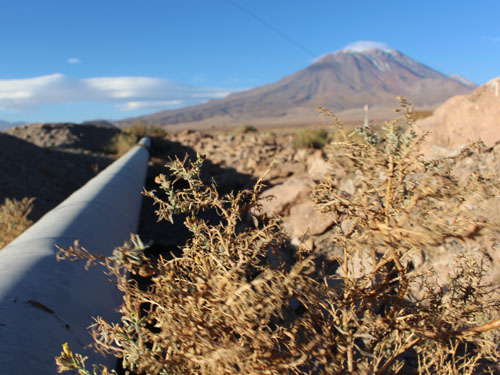

Fundada en 1993, explora es una empresa de viajes que posee y opera hoteles y Travesías (viajes nómades) en seis destinos remotos de Sudamérica.
Proponemos una nueva forma de viaje, sobre la base de la exploración profunda, el lujo de lo esencial y el desarrollo sustentable.
Dado que nuestras exploraciones son lo que nos diferencia, estamos constantemente buscando nuevas rutas. Para este año, ofrecemos alrededor de 1.300 km para recorrer caminando, pedaleando o a caballo, en más de 100 exploraciones diferentes.
Volcan
Dentro del casco histórico del oasis milenario de San Pedro de Atacama, se encuentra el encantador Hotel Poblado Kimal, con su entorno de tranquilidad y recogimiento en la esquina de la calle principal, Caracoles.
Khutulu
Dentro del casco histórico del oasis milenario de San Pedro de Atacama, se encuentra el encantador Hotel Poblado Kimal, con su entorno de tranquilidad y recogimiento en la esquina de la calle principal, Caracoles.
Ferrocarril

Dentro del casco histórico del oasis milenario de San Pedro de Atacama, se encuentra el encantador Hotel Poblado Kimal, con su entorno de tranquilidad y recogimiento en la esquina de la calle principal, Caracoles.